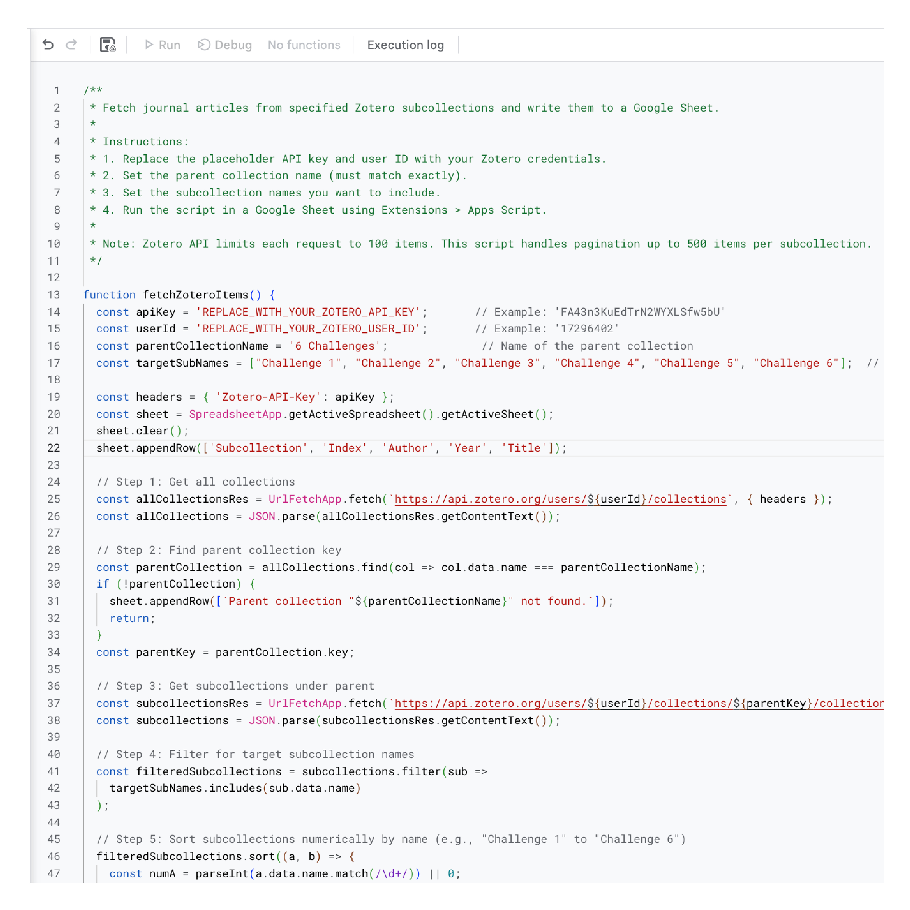
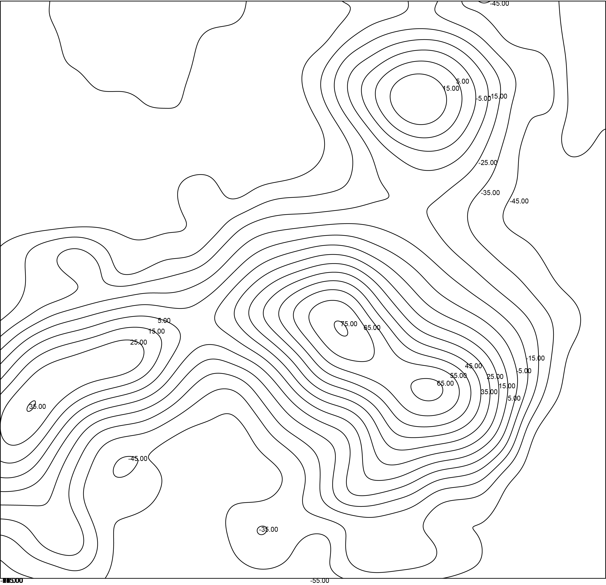

Zotero to Google Sheets
Zotero to Google Sheets
Automated Literature Review Pipeline
Python pipeline extracting Zotero citations and abstracts into formatted Google Sheets matrices for PRISMA systematic literature reviews.
A series of bespoke automation pipelines, parametric utility tools, and data bridges developed to eliminate friction in academic research, spatial analysis, and architectural presentation.

Architectural and urban research frequently demands repetitive manual tasks: categorizing hundreds of scientific papers, calibrating CAD topographic lines with missing elevations, or manually harmonizing visual color palettes across dozens of simulation viewports.
Rather than relying solely on off-the-shelf software, this collection of custom tools bridges gaps between literature management, computational geometry, and graphical standards. By combining Python data scripting with parametric Grasshopper definitions, each utility automates friction points into repeatable, error-free workflows.

Automated Literature Review Pipeline
Python pipeline extracting Zotero citations and abstracts into formatted Google Sheets matrices for PRISMA systematic literature reviews.

Parametric Topographic Interpolation
Python & Grasshopper definition parsing CAD contour geometry and generating verified 3D digital terrain meshes.
Parametric Presentation Palette
Curated architectural color palettes for Grasshopper environmental graphics and Ladybug heatmaps.
Double-Curved Spatial Conformance
Parametric Grasshopper definition conforming 3D geometries and patterns onto complex double-curved surfaces.